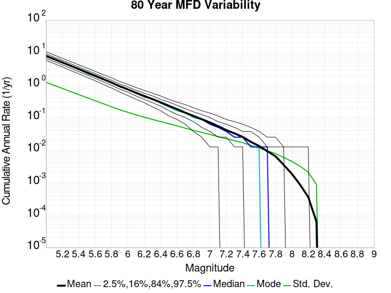
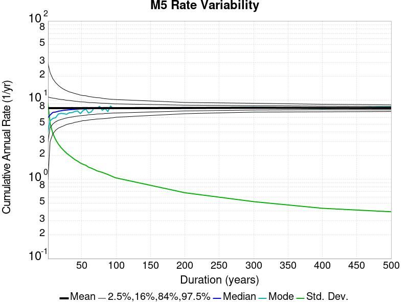
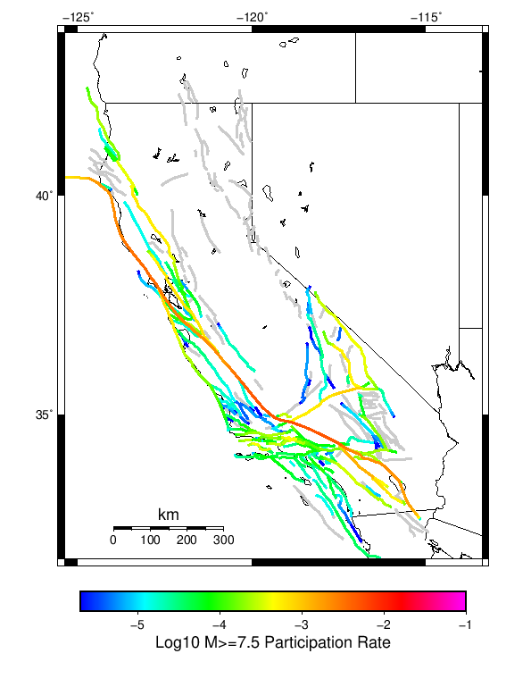

Start 2012, 500 yr, NoERT, Spontaneous, Historical Catalog Results
| Start 2012, 500 yr, NoERT, Spontaneous, Historical Catalog |
|---|
| Num Simulations | 234 (incomplete) |
| Start Time | 2012/01/01 00:00:00 UTC |
| Start Time Epoch Milliseconds | 1325376000000 |
| Duration | 500 Years |
| Includes Spontaneous? | true |
| Trigger Ruptures | (none) |
| Historical Ruptures | 60366 Trigger Ruptures |
| First: M7.3 at 1852/01/05 04:40:39 UTC |
| Last: M3.2 at 2011/12/31 19:14:44 UTC |
| Largest: M7.9 at 1857/01/09 16:25:39 UTC |
| Config Generated With | u3etas_config_builder.sh --start-year 2012 --num-simulations 1000 --duration-years 500 --prob-model NO_ERT --include-spontaneous --historical-catalog --scale-factor 1.0 --hpc-site USC_HPC --nodes 36 --hours 24 --queue scec |
Table Of Contents
Magnitude Frequency Distribution
(top)
Legend
- Mean (thick black line): mean annual rate across all 234 catalogs
- 2.5%,97.5% (thin black lines): annual rate percentiles across all 234 catalogs
- Median (thin blue line): median annual rate across all 234 catalogs
- Mode (thin cyan line): modal annual rate across all 234 catalogs (scaled to annualized value)
- 500 yr Probability (thin red line): 500 year probability calculated as the fraction of catalogs with at least 1 occurrence
- 500 yr Supraseismogenic Probability (thin dashed red line): same as above, but only for supraseismogenic ruptures on explicitly modeled UCERF3 faults
- 95% Conf (light red shaded region): binomial 95% confidence bounds on probability

| Mag | Mean | 2.5 %ile | 97.5 %ile | Median | Mode | 500 yr Probability | 500 yr Supra-Seis Prob |
|---|
| M≥5 | 7.933 | 7.232 | 8.638 | 7.916 | 8.136 | 1.000 (100.00%) | 1.000 (100.00%) |
| M≥5.1 | 6.282 | 5.720 | 6.872 | 6.276 | 6.384 | 1.000 (100.00%) | 1.000 (100.00%) |
| M≥5.2 | 4.975 | 4.492 | 5.472 | 4.956 | 4.908 | 1.000 (100.00%) | 1.000 (100.00%) |
| M≥5.3 | 3.934 | 3.508 | 4.318 | 3.926 | 3.772 | 1.000 (100.00%) | 1.000 (100.00%) |
| M≥5.4 | 3.108 | 2.762 | 3.416 | 3.102 | 3.120 | 1.000 (100.00%) | 1.000 (100.00%) |
| M≥5.5 | 2.453 | 2.188 | 2.708 | 2.450 | 2.346 | 1.000 (100.00%) | 1.000 (100.00%) |
| M≥5.6 | 1.934 | 1.736 | 2.142 | 1.936 | 1.880 | 1.000 (100.00%) | 1.000 (100.00%) |
| M≥5.7 | 1.519 | 1.346 | 1.678 | 1.510 | 1.502 | 1.000 (100.00%) | 1.000 (100.00%) |
| M≥5.8 | 1.192 | 1.060 | 1.332 | 1.190 | 1.156 | 1.000 (100.00%) | 1.000 (100.00%) |
| M≥5.9 | 0.917 | 0.810 | 1.026 | 0.916 | 0.914 | 1.000 (100.00%) | 1.000 (100.00%) |
| M≥6 | 0.734 | 0.652 | 0.822 | 0.732 | 0.724 | 1.000 (100.00%) | 1.000 (100.00%) |
| M≥6.1 | 0.572 | 0.504 | 0.648 | 0.572 | 0.590 | 1.000 (100.00%) | 1.000 (100.00%) |
| M≥6.2 | 0.458 | 0.398 | 0.526 | 0.458 | 0.462 | 1.000 (100.00%) | 1.000 (100.00%) |
| M≥6.3 | 0.368 | 0.318 | 0.428 | 0.366 | 0.364 | 1.000 (100.00%) | 1.000 (100.00%) |
| M≥6.4 | 0.293 | 0.248 | 0.342 | 0.292 | 0.284 | 1.000 (100.00%) | 1.000 (100.00%) |
| M≥6.5 | 0.228 | 0.194 | 0.268 | 0.228 | 0.226 | 1.000 (100.00%) | 1.000 (100.00%) |
| M≥6.6 | 0.181 | 0.152 | 0.216 | 0.180 | 0.194 | 1.000 (100.00%) | 1.000 (100.00%) |
| M≥6.7 | 0.141 | 0.114 | 0.170 | 0.142 | 0.144 | 1.000 (100.00%) | 1.000 (100.00%) |
| M≥6.8 | 0.112 | 0.088 | 0.138 | 0.112 | 0.110 | 1.000 (100.00%) | 1.000 (100.00%) |
| M≥6.9 | 0.089 | 0.068 | 0.110 | 0.090 | 0.092 | 1.000 (100.00%) | 1.000 (100.00%) |
| M≥7 | 0.071 | 0.056 | 0.088 | 0.070 | 0.074 | 1.000 (100.00%) | 1.000 (100.00%) |
| M≥7.1 | 0.054 | 0.038 | 0.072 | 0.054 | 0.052 | 1.000 (100.00%) | 1.000 (100.00%) |
| M≥7.2 | 0.041 | 0.026 | 0.054 | 0.040 | 0.036 | 1.000 (100.00%) | 1.000 (100.00%) |
| M≥7.3 | 0.033 | 0.022 | 0.044 | 0.034 | 0.034 | 1.000 (100.00%) | 1.000 (100.00%) |
| M≥7.4 | 0.026 | 0.014 | 0.038 | 0.026 | 0.024 | 1.000 (100.00%) | 1.000 (100.00%) |
| M≥7.5 | 0.018 | 0.010 | 0.028 | 0.018 | 0.018 | 1.000 (100.00%) | 1.000 (100.00%) |
| M≥7.6 | 0.013 | 8.00E-3 | 0.020 | 0.014 | 0.014 | 1.000 (100.00%) | 1.000 (100.00%) |
| M≥7.7 | 9.21E-3 | 4.00E-3 | 0.014 | 8.00E-3 | 8.00E-3 | 1.000 (100.00%) | 1.000 (100.00%) |
| M≥7.8 | 6.46E-3 | 2.00E-3 | 0.012 | 6.00E-3 | 6.00E-3 | 0.991 (99.15%) | 0.991 (99.15%) |
| M≥7.9 | 3.60E-3 | 0.000 | 8.00E-3 | 4.00E-3 | 4.00E-3 | 0.910 (91.03%) | 0.910 (91.03%) |
| M≥8 | 1.85E-3 | 0.000 | 4.00E-3 | 2.00E-3 | 2.00E-3 | 0.671 (67.09%) | 0.671 (67.09%) |
| M≥8.1 | 8.72E-4 | 0.000 | 4.00E-3 | 0.000 | 0.000 | 0.385 (38.46%) | 0.385 (38.46%) |
| M≥8.2 | 3.93E-4 | 0.000 | 2.00E-3 | 0.000 | 0.000 | 0.192 (19.23%) | 0.192 (19.23%) |
| M≥8.3 | 8.55E-5 | 0.000 | 2.00E-3 | 0.000 | 0.000 | 0.043 (4.27%) | 0.043 (4.27%) |
| M≥8.4 | 0.000 | 0.000 | 0.000 | 0.000 | 0.000 | 0.000 (0.00%) | 0.000 (0.00%) |
| M≥8.5 | 0.000 | 0.000 | 0.000 | 0.000 | 0.000 | 0.000 (0.00%) | 0.000 (0.00%) |
| M≥8.6 | 0.000 | 0.000 | 0.000 | 0.000 | 0.000 | 0.000 (0.00%) | 0.000 (0.00%) |
| M≥8.7 | 0.000 | 0.000 | 0.000 | 0.000 | 0.000 | 0.000 (0.00%) | 0.000 (0.00%) |
| M≥8.8 | 0.000 | 0.000 | 0.000 | 0.000 | 0.000 | 0.000 (0.00%) | 0.000 (0.00%) |
| M≥8.9 | 0.000 | 0.000 | 0.000 | 0.000 | 0.000 | 0.000 (0.00%) | 0.000 (0.00%) |
| M≥9 | 0.000 | 0.000 | 0.000 | 0.000 | 0.000 | 0.000 (0.00%) | 0.000 (0.00%) |
Long Term Rate Variability
(top)
162 Year Variability
(top)

Download CSV Here
| Magnitude | Mean | Median | Mode | Std. Dev. | 2.5 %-ile | 16 %-ile | 84 %-ile | 97.5 %-ile |
|---|
| 5.0 | 7.9419646 | 7.9012346 | 7.9753084 | 0.759945 | 6.5740743 | 7.1975307 | 8.666667 | 9.5 |
| 5.1 | 6.289508 | 6.259259 | 6.2901235 | 0.6138202 | 5.191358 | 5.6666665 | 6.882716 | 7.5925927 |
| 5.2 | 4.9812527 | 4.9506173 | 5.160494 | 0.49653056 | 4.1049385 | 4.4814816 | 5.4691358 | 6.012346 |
| 5.3 | 3.9390893 | 3.9135802 | 3.9567902 | 0.40359932 | 3.2098765 | 3.5308642 | 4.339506 | 4.8209877 |
| 5.4 | 3.1125972 | 3.1049383 | 2.925926 | 0.32577583 | 2.5185184 | 2.7777777 | 3.4320989 | 3.808642 |
| 5.5 | 2.4568076 | 2.4567902 | 2.4814816 | 0.26356146 | 1.9876543 | 2.1851852 | 2.7098765 | 3.0185184 |
| 5.6 | 1.9368031 | 1.9197531 | 1.9135803 | 0.21396676 | 1.5555556 | 1.7222222 | 2.154321 | 2.4012346 |
| 5.7 | 1.5217192 | 1.5123457 | 1.537037 | 0.1749689 | 1.2098765 | 1.3518518 | 1.6851852 | 1.8827161 |
| 5.8 | 1.1937058 | 1.191358 | 1.1481482 | 0.14154287 | 0.9444444 | 1.0493827 | 1.3333334 | 1.5 |
| 5.9 | 0.918355 | 0.9074074 | 0.95679015 | 0.115483016 | 0.7160494 | 0.80246913 | 1.0308642 | 1.1728395 |
| 6.0 | 0.7358341 | 0.72839504 | 0.7407407 | 0.0959443 | 0.5617284 | 0.6419753 | 0.8271605 | 0.9382716 |
| 6.1 | 0.5737311 | 0.56790125 | 0.537037 | 0.08195196 | 0.42592594 | 0.49382716 | 0.654321 | 0.75308645 |
| 6.2 | 0.4587862 | 0.45061728 | 0.45061728 | 0.07022563 | 0.33333334 | 0.3888889 | 0.5308642 | 0.60493827 |
| 6.3 | 0.36884916 | 0.36419752 | 0.34567901 | 0.061161503 | 0.25925925 | 0.30864197 | 0.43209878 | 0.49382716 |
| 6.4 | 0.29363194 | 0.29012346 | 0.30246913 | 0.051933378 | 0.2037037 | 0.24074075 | 0.34567901 | 0.40123457 |
| 6.5 | 0.22896662 | 0.22839506 | 0.22839506 | 0.04387028 | 0.15432099 | 0.18518518 | 0.27160493 | 0.3271605 |
| 6.6 | 0.18211634 | 0.17901234 | 0.16666667 | 0.03748017 | 0.11728395 | 0.14197531 | 0.21604939 | 0.25925925 |
| 6.7 | 0.14176427 | 0.14197531 | 0.14197531 | 0.031722434 | 0.08024691 | 0.11111111 | 0.17283951 | 0.20987654 |
| 6.8 | 0.11288734 | 0.11111111 | 0.10493827 | 0.02634009 | 0.061728396 | 0.086419754 | 0.13580246 | 0.16666667 |
| 6.9 | 0.089462206 | 0.086419754 | 0.09259259 | 0.022347236 | 0.049382716 | 0.06790123 | 0.11111111 | 0.13580246 |
| 7.0 | 0.07075024 | 0.06790123 | 0.06790123 | 0.018666832 | 0.037037037 | 0.049382716 | 0.086419754 | 0.11111111 |
| 7.1 | 0.054131053 | 0.055555556 | 0.049382716 | 0.016281156 | 0.024691358 | 0.037037037 | 0.06790123 | 0.086419754 |
| 7.2 | 0.041073125 | 0.043209877 | 0.043209877 | 0.01382627 | 0.018518519 | 0.024691358 | 0.055555556 | 0.06790123 |
| 7.3 | 0.033124056 | 0.030864198 | 0.024691358 | 0.012219359 | 0.012345679 | 0.024691358 | 0.043209877 | 0.061728396 |
| 7.4 | 0.025939995 | 0.024691358 | 0.024691358 | 0.01073803 | 0.0061728396 | 0.012345679 | 0.037037037 | 0.049382716 |
| 7.5 | 0.018193169 | 0.018518519 | 0.018518519 | 0.008708049 | 0.0061728396 | 0.012345679 | 0.024691358 | 0.037037037 |
| 7.6 | 0.013506384 | 0.012345679 | 0.012345679 | 0.0071980245 | 0.0 | 0.0061728396 | 0.018518519 | 0.030864198 |
| 7.7 | 0.009250466 | 0.0061728396 | 0.0061728396 | 0.0056317826 | 0.0 | 0.0061728396 | 0.012345679 | 0.018518519 |
| 7.8 | 0.006463016 | 0.0061728396 | 0.0061728396 | 0.004577299 | 0.0 | 0.0 | 0.012345679 | 0.018518519 |
| 7.9 | 0.0035876331 | 0.0061728396 | 0.0061728396 | 0.0036780178 | 0.0 | 0.0 | 0.0061728396 | 0.012345679 |
| 8.0 | 0.0018289895 | 0.0 | 0.0 | 0.0029708408 | 0.0 | 0.0 | 0.0061728396 | 0.0061728396 |
| 8.1 | 8.353558E-4 | 0.0 | 0.0 | 0.0021386377 | 0.0 | 0.0 | 0.0 | 0.0061728396 |
| 8.2 | 3.781084E-4 | 0.0 | 0.0 | 0.0014812704 | 0.0 | 0.0 | 0.0 | 0.0061728396 |
| 8.3 | 7.913897E-5 | 0.0 | 0.0 | 6.949368E-4 | 0.0 | 0.0 | 0.0 | 0.0 |
| 8.4 | 0.0 | 0.0 | 0.0 | 0.0 | 0.0 | 0.0 | 0.0 | 0.0 |
| 8.5 | 0.0 | 0.0 | 0.0 | 0.0 | 0.0 | 0.0 | 0.0 | 0.0 |
| 8.6 | 0.0 | 0.0 | 0.0 | 0.0 | 0.0 | 0.0 | 0.0 | 0.0 |
| 8.7 | 0.0 | 0.0 | 0.0 | 0.0 | 0.0 | 0.0 | 0.0 | 0.0 |
| 8.8 | 0.0 | 0.0 | 0.0 | 0.0 | 0.0 | 0.0 | 0.0 | 0.0 |
| 8.9 | 0.0 | 0.0 | 0.0 | 0.0 | 0.0 | 0.0 | 0.0 | 0.0 |
| 9.0 | 0.0 | 0.0 | 0.0 | 0.0 | 0.0 | 0.0 | 0.0 | 0.0 |
80 Year Variability
(top)

Download CSV Here
| Magnitude | Mean | Median | Mode | Std. Dev. | 2.5 %-ile | 16 %-ile | 84 %-ile | 97.5 %-ile |
|---|
| 5.0 | 7.9450855 | 7.8875 | 7.55 | 1.197976 | 5.85 | 6.725 | 9.1125 | 10.5375 |
| 5.1 | 6.292459 | 6.2375 | 6.375 | 0.9636205 | 4.575 | 5.325 | 7.2375 | 8.3125 |
| 5.2 | 4.983654 | 4.95 | 5.025 | 0.7828115 | 3.6125 | 4.1875 | 5.75 | 6.7 |
| 5.3 | 3.9415598 | 3.9125 | 3.9375 | 0.63059276 | 2.8375 | 3.3 | 4.55 | 5.3125 |
| 5.4 | 3.114245 | 3.0875 | 3.0375 | 0.50455326 | 2.225 | 2.6 | 3.6 | 4.2 |
| 5.5 | 2.4582088 | 2.4375 | 2.4375 | 0.4041898 | 1.725 | 2.0625 | 2.85 | 3.3125 |
| 5.6 | 1.9381055 | 1.925 | 1.925 | 0.3269775 | 1.3625 | 1.6125 | 2.25 | 2.6375 |
| 5.7 | 1.5225427 | 1.5 | 1.5 | 0.2630998 | 1.05 | 1.2625 | 1.775 | 2.075 |
| 5.8 | 1.1945779 | 1.1875 | 1.0625 | 0.21126212 | 0.8125 | 0.9875 | 1.4 | 1.65 |
| 5.9 | 0.91881233 | 0.9125 | 0.95 | 0.17042728 | 0.6125 | 0.75 | 1.0875 | 1.2875 |
| 6.0 | 0.73620903 | 0.725 | 0.7 | 0.1402002 | 0.4875 | 0.6 | 0.875 | 1.05 |
| 6.1 | 0.57400286 | 0.5625 | 0.55 | 0.11905175 | 0.3625 | 0.4625 | 0.6875 | 0.8375 |
| 6.2 | 0.45895654 | 0.45 | 0.4375 | 0.10198885 | 0.275 | 0.3625 | 0.5625 | 0.675 |
| 6.3 | 0.36894587 | 0.3625 | 0.3625 | 0.08816925 | 0.2125 | 0.2875 | 0.45 | 0.55 |
| 6.4 | 0.29365206 | 0.2875 | 0.275 | 0.07593773 | 0.1625 | 0.225 | 0.3625 | 0.4625 |
| 6.5 | 0.22907764 | 0.225 | 0.2125 | 0.06505949 | 0.1125 | 0.1625 | 0.2875 | 0.3625 |
| 6.6 | 0.18217592 | 0.175 | 0.175 | 0.056193095 | 0.0875 | 0.125 | 0.2375 | 0.3125 |
| 6.7 | 0.14180912 | 0.1375 | 0.1375 | 0.04704275 | 0.0625 | 0.1 | 0.1875 | 0.2375 |
| 6.8 | 0.112900645 | 0.1125 | 0.1 | 0.039747003 | 0.0375 | 0.075 | 0.15 | 0.2 |
| 6.9 | 0.08946759 | 0.0875 | 0.075 | 0.034212667 | 0.025 | 0.0625 | 0.125 | 0.1625 |
| 7.0 | 0.0707265 | 0.0625 | 0.0625 | 0.029245488 | 0.0125 | 0.0375 | 0.1 | 0.1375 |
| 7.1 | 0.054113247 | 0.05 | 0.05 | 0.02513323 | 0.0125 | 0.025 | 0.075 | 0.1125 |
| 7.2 | 0.041070156 | 0.0375 | 0.0375 | 0.021669837 | 0.0 | 0.025 | 0.0625 | 0.0875 |
| 7.3 | 0.033137463 | 0.0375 | 0.025 | 0.01945611 | 0.0 | 0.0125 | 0.05 | 0.075 |
| 7.4 | 0.025943732 | 0.025 | 0.0125 | 0.016898181 | 0.0 | 0.0125 | 0.0375 | 0.0625 |
| 7.5 | 0.01820691 | 0.0125 | 0.0125 | 0.013953892 | 0.0 | 0.0 | 0.0375 | 0.05 |
| 7.6 | 0.013559473 | 0.0125 | 0.0125 | 0.011679761 | 0.0 | 0.0 | 0.025 | 0.0375 |
| 7.7 | 0.009303775 | 0.0125 | 0.0 | 0.009410671 | 0.0 | 0.0 | 0.0125 | 0.025 |
| 7.8 | 0.0064992877 | 0.0 | 0.0 | 0.007743735 | 0.0 | 0.0 | 0.0125 | 0.025 |
| 7.9 | 0.003596866 | 0.0 | 0.0 | 0.005948719 | 0.0 | 0.0 | 0.0125 | 0.0125 |
| 8.0 | 0.0018251424 | 0.0 | 0.0 | 0.0044905716 | 0.0 | 0.0 | 0.0 | 0.0125 |
| 8.1 | 8.368946E-4 | 0.0 | 0.0 | 0.0031253395 | 0.0 | 0.0 | 0.0 | 0.0125 |
| 8.2 | 3.7393163E-4 | 0.0 | 0.0 | 0.0021301531 | 0.0 | 0.0 | 0.0 | 0.0125 |
| 8.3 | 7.122507E-5 | 0.0 | 0.0 | 9.412074E-4 | 0.0 | 0.0 | 0.0 | 0.0 |
| 8.4 | 0.0 | 0.0 | 0.0 | 0.0 | 0.0 | 0.0 | 0.0 | 0.0 |
| 8.5 | 0.0 | 0.0 | 0.0 | 0.0 | 0.0 | 0.0 | 0.0 | 0.0 |
| 8.6 | 0.0 | 0.0 | 0.0 | 0.0 | 0.0 | 0.0 | 0.0 | 0.0 |
| 8.7 | 0.0 | 0.0 | 0.0 | 0.0 | 0.0 | 0.0 | 0.0 | 0.0 |
| 8.8 | 0.0 | 0.0 | 0.0 | 0.0 | 0.0 | 0.0 | 0.0 | 0.0 |
| 8.9 | 0.0 | 0.0 | 0.0 | 0.0 | 0.0 | 0.0 | 0.0 | 0.0 |
| 9.0 | 0.0 | 0.0 | 0.0 | 0.0 | 0.0 | 0.0 | 0.0 | 0.0 |
28 Year Variability
(top)

Download CSV Here
| Magnitude | Mean | Median | Mode | Std. Dev. | 2.5 %-ile | 16 %-ile | 84 %-ile | 97.5 %-ile |
|---|
| 5.0 | 7.9480534 | 7.5 | 6.571429 | 2.1131225 | 4.964286 | 6.035714 | 9.964286 | 13.142858 |
| 5.1 | 6.2945933 | 5.928571 | 5.0 | 1.6927963 | 3.892857 | 4.75 | 7.892857 | 10.392858 |
| 5.2 | 4.9851055 | 4.714286 | 4.107143 | 1.3563615 | 3.0357144 | 3.7142856 | 6.285714 | 8.214286 |
| 5.3 | 3.9429092 | 3.75 | 3.5714285 | 1.0906948 | 2.357143 | 2.9285715 | 5.0 | 6.535714 |
| 5.4 | 3.1155014 | 2.9642856 | 2.8214285 | 0.87248063 | 1.7857143 | 2.2857144 | 3.9642856 | 5.142857 |
| 5.5 | 2.4590068 | 2.357143 | 2.1785715 | 0.69928503 | 1.3928572 | 1.7857143 | 3.142857 | 4.107143 |
| 5.6 | 1.9386896 | 1.8571428 | 1.7142857 | 0.56490815 | 1.0714285 | 1.3928572 | 2.5 | 3.25 |
| 5.7 | 1.5228848 | 1.4642857 | 1.25 | 0.45291522 | 0.78571427 | 1.0714285 | 1.9642857 | 2.5714285 |
| 5.8 | 1.1949562 | 1.1428572 | 1.0 | 0.36552966 | 0.60714287 | 0.85714287 | 1.5357143 | 2.0357144 |
| 5.9 | 0.9191176 | 0.89285713 | 0.9285714 | 0.29557732 | 0.42857143 | 0.64285713 | 1.2142857 | 1.5714285 |
| 6.0 | 0.73630863 | 0.71428573 | 0.64285713 | 0.24388629 | 0.32142857 | 0.5 | 0.96428573 | 1.2857143 |
| 6.1 | 0.57423866 | 0.5714286 | 0.5714286 | 0.20593949 | 0.21428572 | 0.35714287 | 0.78571427 | 1.0357143 |
| 6.2 | 0.4590336 | 0.42857143 | 0.35714287 | 0.17624655 | 0.17857143 | 0.2857143 | 0.64285713 | 0.85714287 |
| 6.3 | 0.3689758 | 0.35714287 | 0.2857143 | 0.15198079 | 0.10714286 | 0.21428572 | 0.53571427 | 0.71428573 |
| 6.4 | 0.29367772 | 0.2857143 | 0.25 | 0.13143235 | 0.071428575 | 0.17857143 | 0.42857143 | 0.5714286 |
| 6.5 | 0.22903648 | 0.21428572 | 0.17857143 | 0.11270596 | 0.035714287 | 0.10714286 | 0.35714287 | 0.5 |
| 6.6 | 0.18221648 | 0.17857143 | 0.14285715 | 0.09766496 | 0.035714287 | 0.071428575 | 0.2857143 | 0.39285713 |
| 6.7 | 0.14192344 | 0.14285715 | 0.10714286 | 0.08299536 | 0.0 | 0.071428575 | 0.21428572 | 0.32142857 |
| 6.8 | 0.11305035 | 0.10714286 | 0.071428575 | 0.07134581 | 0.0 | 0.035714287 | 0.17857143 | 0.2857143 |
| 6.9 | 0.089644834 | 0.071428575 | 0.071428575 | 0.061335936 | 0.0 | 0.035714287 | 0.14285715 | 0.21428572 |
| 7.0 | 0.070809096 | 0.071428575 | 0.035714287 | 0.053438216 | 0.0 | 0.035714287 | 0.10714286 | 0.21428572 |
| 7.1 | 0.054163974 | 0.035714287 | 0.035714287 | 0.045866583 | 0.0 | 0.0 | 0.10714286 | 0.17857143 |
| 7.2 | 0.041119013 | 0.035714287 | 0.035714287 | 0.039215147 | 0.0 | 0.0 | 0.071428575 | 0.14285715 |
| 7.3 | 0.033182506 | 0.035714287 | 0.0 | 0.035048068 | 0.0 | 0.0 | 0.071428575 | 0.10714286 |
| 7.4 | 0.026000144 | 0.035714287 | 0.0 | 0.030882522 | 0.0 | 0.0 | 0.071428575 | 0.10714286 |
| 7.5 | 0.01822524 | 0.0 | 0.0 | 0.025491312 | 0.0 | 0.0 | 0.035714287 | 0.071428575 |
| 7.6 | 0.013583639 | 0.0 | 0.0 | 0.021694995 | 0.0 | 0.0 | 0.035714287 | 0.071428575 |
| 7.7 | 0.009292179 | 0.0 | 0.0 | 0.01767175 | 0.0 | 0.0 | 0.035714287 | 0.035714287 |
| 7.8 | 0.006517992 | 0.0 | 0.0 | 0.014805878 | 0.0 | 0.0 | 0.035714287 | 0.035714287 |
| 7.9 | 0.003600158 | 0.0 | 0.0 | 0.010960616 | 0.0 | 0.0 | 0.0 | 0.035714287 |
| 8.0 | 0.0018225239 | 0.0 | 0.0 | 0.007941471 | 0.0 | 0.0 | 0.0 | 0.035714287 |
| 8.1 | 8.349494E-4 | 0.0 | 0.0 | 0.0053972034 | 0.0 | 0.0 | 0.0 | 0.0 |
| 8.2 | 3.770739E-4 | 0.0 | 0.0 | 0.0036507659 | 0.0 | 0.0 | 0.0 | 0.0 |
| 8.3 | 7.1823604E-5 | 0.0 | 0.0 | 0.0016001918 | 0.0 | 0.0 | 0.0 | 0.0 |
| 8.4 | 0.0 | 0.0 | 0.0 | 0.0 | 0.0 | 0.0 | 0.0 | 0.0 |
| 8.5 | 0.0 | 0.0 | 0.0 | 0.0 | 0.0 | 0.0 | 0.0 | 0.0 |
| 8.6 | 0.0 | 0.0 | 0.0 | 0.0 | 0.0 | 0.0 | 0.0 | 0.0 |
| 8.7 | 0.0 | 0.0 | 0.0 | 0.0 | 0.0 | 0.0 | 0.0 | 0.0 |
| 8.8 | 0.0 | 0.0 | 0.0 | 0.0 | 0.0 | 0.0 | 0.0 | 0.0 |
| 8.9 | 0.0 | 0.0 | 0.0 | 0.0 | 0.0 | 0.0 | 0.0 | 0.0 |
| 9.0 | 0.0 | 0.0 | 0.0 | 0.0 | 0.0 | 0.0 | 0.0 | 0.0 |
Variability Duration Dependence
(top)

Download CSV Here
| Duration (years) | Mean | Median | Mode | Std. Dev. | 2.5 %-ile | 16 %-ile | 84 %-ile | 97.5 %-ile |
|---|
| 1.0 | 7.9326067 | 6.0 | 4.0 | 8.975717 | 1.0 | 3.0 | 11.0 | 29.0 |
| 4.0 | 7.9326067 | 6.5 | 5.75 | 5.109391 | 3.0 | 4.5 | 10.75 | 22.0 |
| 8.0 | 7.9335885 | 7.0 | 5.375 | 3.7976918 | 3.75 | 5.0 | 10.625 | 18.375 |
| 12.0 | 7.9364533 | 7.0833335 | 6.4166665 | 3.156613 | 4.1666665 | 5.3333335 | 10.583333 | 16.583334 |
| 16.0 | 7.9335885 | 7.25 | 6.3125 | 2.7878978 | 4.4375 | 5.5625 | 10.375 | 15.3125 |
| 20.0 | 7.9326067 | 7.35 | 6.35 | 2.4852107 | 4.65 | 5.75 | 10.15 | 14.3 |
| 24.0 | 7.9450855 | 7.4166665 | 7.1666665 | 2.2915666 | 4.7916665 | 5.875 | 10.125 | 13.625 |
| 28.0 | 7.9480534 | 7.5 | 6.571429 | 2.1131225 | 4.964286 | 6.035714 | 9.964286 | 13.142858 |
| 32.0 | 7.9450855 | 7.53125 | 6.96875 | 1.9942418 | 5.09375 | 6.09375 | 9.84375 | 12.75 |
| 36.0 | 7.960543 | 7.638889 | 7.0 | 1.8758966 | 5.1944447 | 6.138889 | 9.777778 | 12.388889 |
| 40.0 | 7.9450855 | 7.65 | 6.525 | 1.7574565 | 5.3 | 6.275 | 9.675 | 12.15 |
| 44.0 | 7.943826 | 7.7272725 | 6.9772725 | 1.675889 | 5.3863635 | 6.2954545 | 9.636364 | 11.795455 |
| 48.0 | 7.9450855 | 7.7291665 | 7.6875 | 1.5729164 | 5.5208335 | 6.3541665 | 9.479167 | 11.5625 |
| 52.0 | 7.960543 | 7.769231 | 7.6538463 | 1.5169283 | 5.5576925 | 6.423077 | 9.480769 | 11.365385 |
| 56.0 | 7.9704003 | 7.785714 | 7.553571 | 1.511013 | 5.625 | 6.428571 | 9.482142 | 11.392858 |
| 60.0 | 7.9450855 | 7.8166666 | 7.2 | 1.403628 | 5.6666665 | 6.55 | 9.316667 | 11.016666 |
| 64.0 | 7.9704003 | 7.828125 | 7.140625 | 1.3677881 | 5.71875 | 6.609375 | 9.328125 | 10.921875 |
| 68.0 | 7.9480534 | 7.8088236 | 8.191176 | 1.3073802 | 5.7352943 | 6.647059 | 9.25 | 10.8529415 |
| 72.0 | 7.9715 | 7.875 | 7.0416665 | 1.2757708 | 5.8333335 | 6.7222223 | 9.222222 | 10.777778 |
| 76.0 | 7.966618 | 7.881579 | 7.3157897 | 1.2291569 | 5.8421054 | 6.75 | 9.144737 | 10.710526 |
| 80.0 | 7.9450855 | 7.8875 | 7.55 | 1.197976 | 5.85 | 6.725 | 9.1125 | 10.5375 |
| 84.0 | 7.976811 | 7.892857 | 7.904762 | 1.1682273 | 5.8690476 | 6.821429 | 9.166667 | 10.476191 |
| 88.0 | 7.9723 | 7.9204545 | 7.193182 | 1.1289788 | 6.0113635 | 6.818182 | 9.113636 | 10.272727 |
| 92.0 | 7.9651895 | 7.8913045 | 7.771739 | 1.0808531 | 6.0326085 | 6.880435 | 9.043478 | 10.315217 |
| 96.0 | 7.9450855 | 7.8541665 | 7.78125 | 1.0385498 | 6.03125 | 6.9375 | 8.989583 | 10.09375 |
| 100.0 | 7.9326067 | 7.87 | 8.91 | 1.0191572 | 6.15 | 6.9 | 8.95 | 10.15 |
| 200.0 | 7.9838033 | 7.945 | 7.885 | 0.67038435 | 6.75 | 7.32 | 8.65 | 9.39 |
| 300.0 | 8.025627 | 7.9566665 | 7.8733335 | 0.48972282 | 7.1566668 | 7.556667 | 8.513333 | 9.136666 |
| 400.0 | 7.9838033 | 7.95 | 7.98 | 0.40182865 | 7.215 | 7.6275 | 8.365 | 8.885 |
| 500.0 | 7.9326067 | 7.916 | 8.136 | 0.35870802 | 7.232 | 7.592 | 8.316 | 8.638 |
Simulation Stationarity
(top)

Section Participation
(top)
Section Participation Plots
(top)
| Min Mag | Complete Catalog (including spontaneous) |
|---|
| All Supra. Seis. |  |
| M≥6.5 |  |
| M≥7 |  |
| M≥7.5 |  |
| M≥8 |  |
Supra-Seismogenic Parent Sections Table
(top)
First 10 of 313 with matching ruptures shown
| Parent Name | Total Mean Annual Rate | Total 500 Year Prob |
|---|
| San Andreas (Parkfield) | 0.049153846 | 1.0 |
| San Andreas (Creeping Section) 2011 CFM | 0.032589745 | 1.0 |
| San Andreas (Mojave S) | 0.026068376 | 1.0 |
| Mendocino | 0.019880341 | 1.0 |
| Cerro Prieto | 0.015777778 | 1.0 |
| Imperial | 0.0132136755 | 1.0 |
| Hayward (So) 2011 CFM | 0.012247863 | 1.0 |
| Brawley (Seismic Zone) alt 1 | 0.012094017 | 1.0 |
| San Andreas (Offshore) 2011 CFM | 0.010837607 | 1.0 |
| Elsinore (Glen Ivy) rev | 0.01076923 | 0.991453 |
M≥6.5 Parent Sections Table
(top)
First 10 of 305 with matching ruptures shown
| Parent Name | Total Mean Annual Rate | Total 500 Year Prob |
|---|
| Cerro Prieto | 0.013410256 | 1.0 |
| San Andreas (Creeping Section) 2011 CFM | 0.012512821 | 1.0 |
| Mendocino | 0.010940171 | 1.0 |
| Hayward (So) 2011 CFM | 0.010179487 | 1.0 |
| San Andreas (Mojave S) | 0.010025641 | 1.0 |
| Imperial | 0.009042735 | 1.0 |
| San Andreas (San Bernardino N) | 0.008777778 | 1.0 |
| Brawley (Seismic Zone) alt 1 | 0.008709402 | 1.0 |
| San Andreas (Offshore) 2011 CFM | 0.008094017 | 1.0 |
| San Andreas (Santa Cruz Mts) 2011 CFM | 0.007982906 | 1.0 |
M≥7 Parent Sections Table
(top)
First 10 of 268 with matching ruptures shown
| Parent Name | Total Mean Annual Rate | Total 500 Year Prob |
|---|
| San Andreas (Creeping Section) 2011 CFM | 0.008282051 | 0.99572647 |
| San Andreas (Mojave S) | 0.006837607 | 1.0 |
| San Andreas (Cholame) rev | 0.0068290597 | 1.0 |
| San Andreas (Carrizo) rev | 0.006803419 | 1.0 |
| San Andreas (Santa Cruz Mts) 2011 CFM | 0.0064273505 | 1.0 |
| San Andreas (Mojave N) | 0.0061623934 | 1.0 |
| San Andreas (San Bernardino N) | 0.005769231 | 0.99572647 |
| San Andreas (Offshore) 2011 CFM | 0.0057179485 | 1.0 |
| San Andreas (North Coast) 2011 CFM | 0.0057008546 | 1.0 |
| San Andreas (Big Bend) | 0.0055128206 | 1.0 |
M≥7.5 Parent Sections Table
(top)
First 10 of 197 with matching ruptures shown
| Parent Name | Total Mean Annual Rate | Total 500 Year Prob |
|---|
| San Andreas (Mojave N) | 0.005991453 | 1.0 |
| San Andreas (Mojave S) | 0.005384615 | 0.99572647 |
| San Andreas (Big Bend) | 0.0052991454 | 1.0 |
| San Andreas (Carrizo) rev | 0.005068376 | 1.0 |
| San Andreas (Cholame) rev | 0.004794872 | 1.0 |
| San Andreas (North Coast) 2011 CFM | 0.0044871797 | 0.99572647 |
| San Andreas (San Bernardino N) | 0.0042478633 | 0.96581197 |
| San Andreas (Creeping Section) 2011 CFM | 0.004188034 | 0.9273504 |
| San Andreas (Parkfield) | 0.0037008547 | 0.94017094 |
| San Andreas (Peninsula) 2011 CFM | 0.0036068377 | 0.97008544 |
M≥8 Parent Sections Table
(top)
First 10 of 52 with matching ruptures shown
| Parent Name | Total Mean Annual Rate | Total 500 Year Prob |
|---|
| San Andreas (Mojave N) | 0.0017008547 | 0.6495727 |
| San Andreas (Mojave S) | 0.0016581196 | 0.63247865 |
| San Andreas (San Bernardino N) | 0.0015982906 | 0.6196581 |
| San Andreas (Big Bend) | 0.0015811966 | 0.6196581 |
| San Andreas (Carrizo) rev | 0.0015811966 | 0.6196581 |
| San Andreas (Cholame) rev | 0.0015213675 | 0.6025641 |
| San Andreas (Parkfield) | 0.0013247863 | 0.53846157 |
| San Andreas (Creeping Section) 2011 CFM | 0.0012393162 | 0.50427353 |
| San Andreas (Santa Cruz Mts) 2011 CFM | 8.290598E-4 | 0.36752138 |
| San Andreas (Peninsula) 2011 CFM | 7.5213675E-4 | 0.33760685 |
Gridded Nucleation
(top)
| Min Mag | Complete Catalog (including spontaneous) |
|---|
| M≥5 |  |
| M≥6 |  |
| M≥7 |  |
(top)
{
"numSimulations": 1000,
"duration": 500.0,
"startYear": 2012,
"includeSpontaneous": true,
"randomSeed": 1567442589085,
"binaryOutput": true,
"binaryOutputFilters": [
{
"prefix": "results_complete",
"descendantsOnly": false
},
{
"prefix": "results_m5_preserve_chain",
"minMag": 5.0,
"preserveChainBelowMag": true,
"descendantsOnly": false
}
],
"forceRecalc": false,
"simulationName": "Start 2012, 500 yr, NoERT, Spontaneous, Historical Catalog",
"numRetries": 3,
"outputDir": "${ETAS_SIM_DIR}/2019_09_02-Start2012_500yr_NoERT_Spontaneous_HistoricalCatalog-includeSpont-histCatalog-no_ert",
"triggerCatalog": "${ETAS_LAUNCHER}/inputs/u3_historical_catalog.txt",
"triggerCatalogSurfaceMappings": "${ETAS_LAUNCHER}/inputs/u3_historical_catalog_finite_fault_mappings.xml",
"treatTriggerCatalogAsSpontaneous": true,
"cacheDir": "${ETAS_LAUNCHER}/inputs/cache_fm3p1_ba",
"fssFile": "${ETAS_LAUNCHER}/inputs/2013_05_10-ucerf3p3-production-10runs_COMPOUND_SOL_FM3_1_SpatSeisU3_MEAN_BRANCH_AVG_SOL.zip",
"probModel": "NO_ERT",
"applySubSeisForSupraNucl": true,
"totRateScaleFactor": 1.0,
"gridSeisCorr": true,
"timeIndependentERF": false,
"griddedOnly": false,
"imposeGR": false,
"includeIndirectTriggering": true,
"gridSeisDiscr": 0.1,
"catalogCompletenessModel": "RELAXED",
"configCommand": "u3etas_config_builder.sh --start-year 2012 --num-simulations 1000 --duration-years 500 --prob-model NO_ERT --include-spontaneous --historical-catalog --scale-factor 1.0 --hpc-site USC_HPC --nodes 36 --hours 24 --queue scec",
"configTime": 1567442589085
}